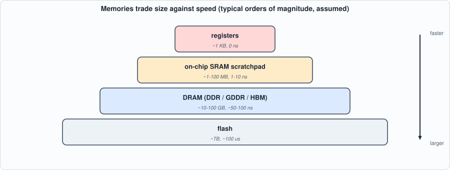
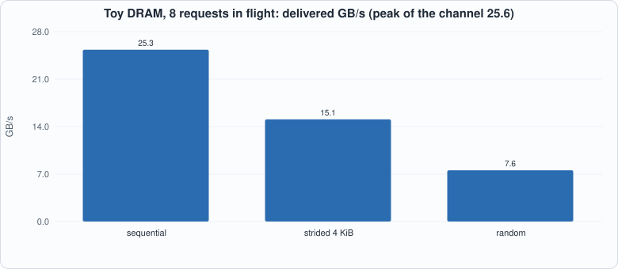

Appendix F. Memory Systems and DRAM¶
About the animals in this picture and where they are standing
- Walia ibex (Capra walie) lives nowhere but the Simien Mountains of northern Ethiopia, on high cliffs. It is endangered, with only a few hundred animals remaining, and is protected within the Simien Mountains National Park.
- Siberian ibex (Capra sibirica) lives in the high mountains of Central Asia, from the Altai and Tian Shan to the Himalaya. It is one of the largest ibexes, and the males' ridged horns can exceed a metre in length.
- Domestic goat (Capra hircus) descends from the bezoar ibex and is among the oldest domesticated animals. There are on the order of a billion of them, kept for milk, meat, fibre and as pack animals.
- Iberian ibex (Capra pyrenaica) lives in the mountains of Spain and Portugal. Its Pyrenean subspecies, the bucardo, died out in 2000. In 2003 scientists cloned one; the kid lived only minutes, making it the first extinct animal to be cloned.
The scene is imaginary: it is set on Enceladus, a small icy moon of Saturn whose south pole sprays water-ice geysers; Saturn and its rings loom overhead. The animals are stylised drawings, shown where they could not live, for effect.
Who this is for: readers of Chapters 5 and 9 who want to know where the memory numbers come from, and why the book's chips assume a simple fixed-latency memory. The DRAM model here is a toy with assumed DDR-class timings; it shows the shapes of the effects (what a row hit is, why random access is slow, why parallelism helps), not the numbers of any real part. tools/appx_f.py runs it.
The hierarchy¶
Memory is a compromise between size, speed and cost, so computers use several kinds in layers:

Figure F.1: smaller and closer is faster. Orders of magnitude only; they vary with process and design.- Registers and flip-flops hold a few bytes and are available in the same cycle.
- SRAM (static RAM: six transistors per bit) is fast and sits on the same die as the logic; megabytes to a hundred megabytes. The scratchpad of Chapter 5 is SRAM. It has one cycle of read latency, and (in this book's chips) one write port.
- DRAM (dynamic RAM: one transistor and a capacitor per bit) is dense and cheap but slow, and must be periodically refreshed; gigabytes. It lives in separate chips (DDR, GDDR) or in stacks next to the processor (HBM).
- Flash holds terabytes and takes about a hundred microseconds to read.
An accelerator keeps what it is working on in SRAM and streams the rest from DRAM. The chip of Chapter 7 does it with explicit LD and ST instructions and a DMA engine (Chapter 5): the programmer, not a cache, moves the data.
How DRAM works¶
A DRAM chip is a set of banks; each bank is a grid of cells read a whole row at a time into a row buffer. To read a byte:
- if the right row is already in the row buffer, a row hit: just the column access (time
tCL); - if the bank is idle, an activate loads the row (
tRCD) and then the column access; - if a different row is open, a precharge closes it (
tRP), then activate, then column access: a row miss, the slowest case.
With the assumed timings of the script (14 ns each) that is 14, 28 and 42 ns to the first data. Data then moves in bursts over the bus (64 bytes in 2.5 ns for a 25.6 GB/s channel). Several banks can work at once, overlapping each other's latencies.
Three access patterns¶
The script drives the same toy DRAM with three patterns of 4,000 requests:

Figure F.2: the same memory, three patterns. Sequential access reaches nearly the channel's peak of 25.6 GB/s; a stride that keeps landing in one bank gets 60% of it; random access, almost every request a row miss, gets 30%.- Sequential (streaming a weight matrix, as decode does): 99% row hits; with one request at a time the 14 ns of latency dominates (3.8 GB/s), but with eight in flight the latencies overlap and the channel is nearly full (25.3 GB/s). Bandwidth needs parallelism: a memory system must be asked for several things at once.
- Strided by 4 KiB: every access lands in the same bank (the bank number is the line number mod 8, and 4 KiB is exactly 64 lines), so the banks cannot overlap each other even though the rows hit.
- Random: every request pays a row miss; the throughput is limited by activates.
Open-page against closed-page policy (keep the row open after an access, or precharge at once): in this toy model, open page wins for both patterns, by a factor of two on the stream. Real controllers choose per workload or adaptively. Banks matter less here than parallelism: one to sixteen banks differ by only 8% on a stream with rows that hit.
What the book's chips assume¶
Chapter 5's DMA has a fixed latency (8 cycles) and moves one word per cycle: this models a streaming read with row hits and enough parallelism, not an arbitrary DRAM. So the book's cycle counts are exact for the SRAM scratchpad and optimistic for DRAM: a real system would see the pattern-dependent numbers above. For the shape of Chapter 9's roofline this does not matter, because decode streams its weights sequentially, which is the good case. It matters for gathers (embedding lookups, paged caches, Chapter 15) and for any scheme that fetches small pieces.
Bandwidth sets the speed of decode¶
Decode reads every weight once per token, so the speed ceiling is bandwidth / bytes of weights, derived in the last table of the script: a 7B-class model at int8 (7 GB) reaches 7 tokens per second on 50 GB/s (a laptop-class memory), 29 on 200 GB/s, 143 on 1 TB/s (a datacenter accelerator's HBM). Halving the bytes (int4) doubles the ceiling, and nothing about the arithmetic changes. This is the whole logic of Part 6.
Running the examples¶
#!/usr/bin/env python3
"""Appendix F (memory systems and DRAM): a toy DRAM bank model and the arithmetic of bandwidth. All DRAM numbers are ASSUMED, typical of DDR4-class parts, to make the shapes of the effects visible; nothing here is a measurement of a real device. Usage: appx_f.py"""
import random
R = random.Random(2)
tRCD, tCL, tRP, tBURST = 14.0, 14.0, 14.0, 2.5 # ns: row to column delay (activate), column access (read latency), precharge (close a row), time on the bus for one 64-byte burst
ROW = 8192; LINE = 64; BANKS = 8
print("== 1. what a DRAM access costs: it depends on whether the row is already open (assumed timings in ns)")
print(f" row hit (the row is open): column access {tCL} -> {tCL:.1f} ns to the first data")
print(f" row empty (the bank is idle): activate {tRCD} + column access {tCL} -> {tRCD + tCL:.1f} ns")
print(f" row miss (another row is open): precharge {tRP} + activate {tRCD} + column access {tCL} -> {tRP + tRCD + tCL:.1f} ns")
print(f" one burst of {LINE} bytes then occupies the bus for {tBURST} ns: the peak bandwidth of one channel is {LINE / tBURST:.1f} GB/s")
class Dram:
def __init__(self, banks=BANKS, policy="open"): self.open = [None] * banks; self.free = [0.0] * banks; self.bus = 0.0; self.policy = policy; self.hits = self.misses = self.empties = 0; self.banks = banks
def access(self, addr, t):
line = addr // LINE; bank = (line // (ROW // LINE)) % self.banks if False else line % self.banks; row = addr // (ROW * self.banks); start = max(t, self.free[bank])
if self.open[bank] == row: lat = tCL; self.hits += 1
elif self.open[bank] is None: lat = tRCD + tCL; self.empties += 1
else: lat = tRP + tRCD + tCL; self.misses += 1
self.open[bank] = row if self.policy == "open" else None; data = start + lat; busstart = max(data, self.bus); self.bus = busstart + tBURST; self.free[bank] = start + (lat - tCL) + tBURST if self.policy == "open" else start + lat + tRP; return self.bus
def run(addrs, banks=BANKS, policy="open", inflight=1):
d = Dram(banks, policy); t = 0.0; lat = []; done = []
for i, a in enumerate(addrs):
issue = done[i - inflight] if i >= inflight else 0.0; fin = d.access(a, issue); done.append(fin); lat.append(fin - issue)
total = done[-1]; return {"gbps": len(addrs) * LINE / total, "avg": sum(lat) / len(lat), "hits": d.hits / len(addrs), "total": total}
N = 4000
seq = [i * LINE for i in range(N)]; stride = [i * LINE * 64 for i in range(N)]; rnd = [R.randrange(0, 1 << 30) // LINE * LINE for _ in range(N)]
print("\n== 2. access patterns on the same DRAM: sequential (streaming a weight matrix), strided (column access), random (a gather). 8 banks, open-page policy")
print(f" {'pattern':28s} {'one request at a time':>24s} {'8 requests in flight':>24s}")
for nm, ad in (("sequential 64-byte lines", seq), ("strided by 4 KiB", stride), ("random lines", rnd)):
a, b = run(ad, inflight=1), run(ad, inflight=8); print(f" {nm:28s} {a['gbps']:7.2f} GB/s ({100*a['hits']:3.0f}% row hits) {b['gbps']:7.2f} GB/s ({100*b['hits']:3.0f}% row hits)")
print(" the strided pattern puts every access in the same bank (bank = line number mod 8, and 4 KiB is exactly 64 lines): the row hits are as good as the stream's but there is no bank parallelism, so the throughput is lower")
print(f" peak of the channel: {LINE / tBURST:.1f} GB/s. Streaming reaches a large part of it only with several requests in flight (latency hidden by parallelism); random access cannot, because most requests pay an activate")
print("\n== 3. open-page against closed-page policy (keep the row open after an access, or close it at once)")
print(f" {'pattern':28s} {'open page':>12s} {'closed page':>12s}")
for nm, ad in (("sequential", seq), ("random", rnd)):
print(f" {nm:28s} {run(ad, inflight=8)['gbps']:9.2f} GB/s {run(ad, policy='closed', inflight=8)['gbps']:9.2f} GB/s")
print(" in this toy model open page wins for both patterns: for a stream by a factor of two (every access after the first is a row hit), for random access narrowly (a closed bank skips the precharge on the critical path but stays busy longer). Real controllers choose per workload or adaptively; the table shows only that the policy is a trade-off and that locality is what makes DRAM fast")
print("\n== 4. how many banks does it take? (sequential stream, 8 requests in flight)")
for b in (1, 2, 4, 8, 16): print(f" {b:2d} banks: {run(seq, banks=b, inflight=8)['gbps']:6.2f} GB/s")
print("\n== 5. memories are a hierarchy: smaller is faster (typical orders of magnitude, ASSUMED; they differ by process and design)")
print(f" {'level':24s} {'size':>12s} {'latency':>12s} {'bandwidth per unit':>20s}")
for r in (("registers", "~1 KB", "0 (same cycle)", "many TB/s"), ("on-chip SRAM scratchpad", "~1-100 MB", "1-10 ns", "TB/s (wide, close)"), ("HBM / GDDR / DDR DRAM", "~10-100 GB", "~50-100 ns", "25 GB/s (one DDR channel) to ~1 TB/s (HBM stack)"), ("flash", "~TB", "~100 us", "GB/s")): print(f" {r[0]:24s} {r[1]:>12s} {r[2]:>12s} {r[3]:>20s}")
print("\n== 6. what the book's chips assume: Chapter 5's DMA has a FIXED latency (8 cycles) and one word per cycle. In this model that is the cost of a row hit followed by a stream; the real part is the pattern-dependent table above")
cycle = 1.0
print(f" at a 1 ns cycle, the assumed row-hit access of {tCL:.0f} ns is {tCL / cycle:.0f} cycles; an 8-cycle latency is a faster, hit-only memory; the chapters' cycle counts are therefore OPTIMISTIC for DRAM and exact for the SRAM scratchpad")
print("\n== 7. bytes per token against bandwidth (Chapter 9): the ceiling on decode speed is bandwidth divided by the bytes read per token (derived)")
for nm, by in (("7B-class, fp16 weights (14 GB)", 14e9), ("7B-class, int8 (7 GB)", 7e9), ("7B-class, int4 (3.5 GB)", 3.5e9)):
print(f" {nm:32s}: " + " ".join(f"{bw:5.0f} GB/s -> {bw * 1e9 / by:6.1f} tok/s" for bw in (50, 200, 1000)))
To compile and run: python3 tools/appx_f.py (instant; Python only). Recorded output:
== 1. what a DRAM access costs: it depends on whether the row is already open (assumed timings in ns)
row hit (the row is open): column access 14.0 -> 14.0 ns to the first data
row empty (the bank is idle): activate 14.0 + column access 14.0 -> 28.0 ns
row miss (another row is open): precharge 14.0 + activate 14.0 + column access 14.0 -> 42.0 ns
one burst of 64 bytes then occupies the bus for 2.5 ns: the peak bandwidth of one channel is 25.6 GB/s
== 2. access patterns on the same DRAM: sequential (streaming a weight matrix), strided (column access), random (a gather). 8 banks, open-page policy
pattern one request at a time 8 requests in flight
sequential 64-byte lines 3.83 GB/s ( 99% row hits) 25.34 GB/s ( 99% row hits)
strided by 4 KiB 3.51 GB/s ( 94% row hits) 15.06 GB/s ( 94% row hits)
random lines 1.44 GB/s ( 0% row hits) 7.56 GB/s ( 0% row hits)
the strided pattern puts every access in the same bank (bank = line number mod 8, and 4 KiB is exactly 64 lines): the row hits are as good as the stream's but there is no bank parallelism, so the throughput is lower
peak of the channel: 25.6 GB/s. Streaming reaches a large part of it only with several requests in flight (latency hidden by parallelism); random access cannot, because most requests pay an activate
== 3. open-page against closed-page policy (keep the row open after an access, or close it at once)
pattern open page closed page
sequential 25.34 GB/s 12.19 GB/s
random 7.56 GB/s 6.51 GB/s
in this toy model open page wins for both patterns: for a stream by a factor of two (every access after the first is a row hit), for random access narrowly (a closed bank skips the precharge on the critical path but stays busy longer). Real controllers choose per workload or adaptively; the table shows only that the policy is a trade-off and that locality is what makes DRAM fast
== 4. how many banks does it take? (sequential stream, 8 requests in flight)
1 banks: 23.49 GB/s
2 banks: 24.63 GB/s
4 banks: 25.10 GB/s
8 banks: 25.34 GB/s
16 banks: 25.38 GB/s
== 5. memories are a hierarchy: smaller is faster (typical orders of magnitude, ASSUMED; they differ by process and design)
level size latency bandwidth per unit
registers ~1 KB 0 (same cycle) many TB/s
on-chip SRAM scratchpad ~1-100 MB 1-10 ns TB/s (wide, close)
HBM / GDDR / DDR DRAM ~10-100 GB ~50-100 ns 25 GB/s (one DDR channel) to ~1 TB/s (HBM stack)
flash ~TB ~100 us GB/s
== 6. what the book's chips assume: Chapter 5's DMA has a FIXED latency (8 cycles) and one word per cycle. In this model that is the cost of a row hit followed by a stream; the real part is the pattern-dependent table above
at a 1 ns cycle, the assumed row-hit access of 14 ns is 14 cycles; an 8-cycle latency is a faster, hit-only memory; the chapters' cycle counts are therefore OPTIMISTIC for DRAM and exact for the SRAM scratchpad
== 7. bytes per token against bandwidth (Chapter 9): the ceiling on decode speed is bandwidth divided by the bytes read per token (derived)
7B-class, fp16 weights (14 GB) : 50 GB/s -> 3.6 tok/s 200 GB/s -> 14.3 tok/s 1000 GB/s -> 71.4 tok/s
7B-class, int8 (7 GB) : 50 GB/s -> 7.1 tok/s 200 GB/s -> 28.6 tok/s 1000 GB/s -> 142.9 tok/s
7B-class, int4 (3.5 GB) : 50 GB/s -> 14.3 tok/s 200 GB/s -> 57.1 tok/s 1000 GB/s -> 285.7 tok/s
Self-check questions¶
- Why does a row hit cost less than a row miss? What does the precharge do?
- A DRAM channel delivers 25.6 GB/s at peak. How long does it take to stream the 7 GB of an int8 7B model once?
- Why does one request at a time give 3.8 GB/s from a memory whose peak is 25.6?
- Why is a stride of 4 KiB bad for the toy model's banks? What would you change in the address mapping?
- An accelerator has 1 TB/s of HBM and a 7B int8 model. What is the best decode speed at batch 1? At batch 8, if the weights are read once per step and the cache is neglected?
- Which of the book's chip assumptions would change if the memory were real DRAM, and which would not?